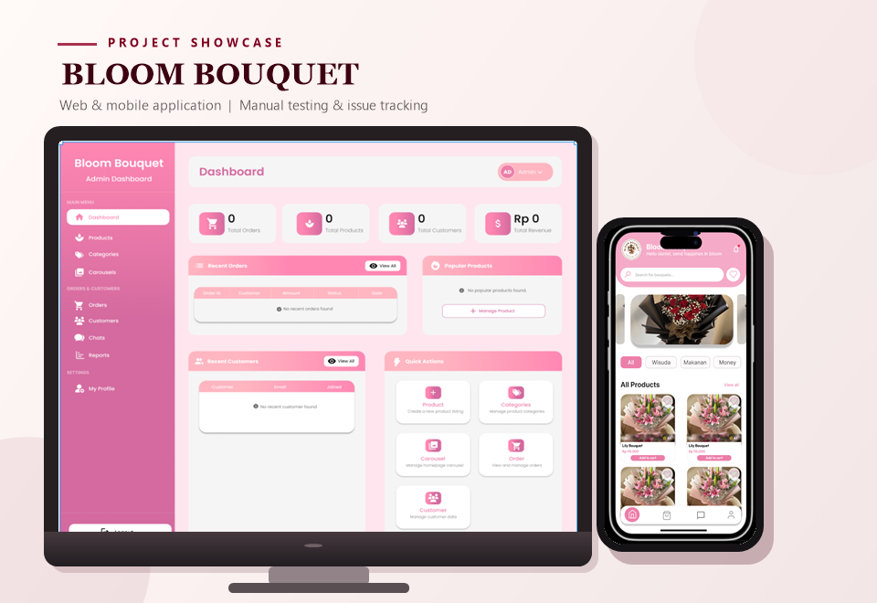
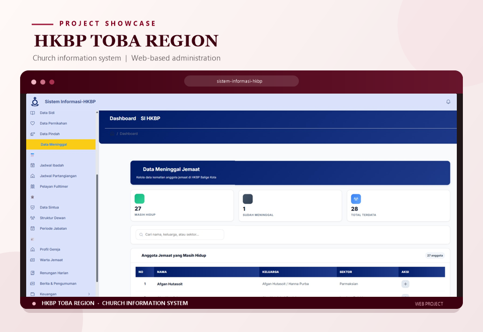

Software Testing
- Conducted functional testing to verify system behavior against requirements and expected results.
- Prepared test cases, documented defects, performed retesting, and compiled testing reports.
Open to Quality Assurance Tester Roles
Quality Assurance Tester
I focus on verifying software functionality against requirements, documenting test results, and reporting defects clearly to support software quality.
About me
I am an Information Technology graduate with software testing experience through my internship and academic projects. My experience includes manual testing, functional testing, test case preparation, defect reporting, retesting, and validating system behavior against requirements.
My Business Analyst internship strengthened my skills in requirements analysis, system documentation, and data validation. This background helps me understand business needs and use requirements as a reference when verifying software functionality.
Education
Del Institute of Technology
Skills
Manual TestingFunctional TestingRegression TestingIntegration TestingUI/UX TestingTest Case PreparationDefect ReportingDefect TrackingRetestingTest Documentation
Analytical ThinkingAttention to DetailProblem-SolvingCommunicationCross-team Collaboration
Experience
February 2026 – August 2026
PT Teknologi Cerdas Berdaulat Indonesia (INaAI) · Central Jakarta
Supported business analysis and software quality activities by preparing test cases, conducting functional testing, documenting defects, retesting system adjustments, validating data, and maintaining requirements documentation.
Projects
Explore selected academic and team projects featuring my contributions to requirements analysis, software testing, and test documentation.
A web-based church website designed to provide information for the congregation and wider community. My contributions included gathering requirements, preparing system documentation, conducting manual functional testing, and documenting defects to help verify that the implemented features aligned with the requirements.
LaravelPHPMySQLHTMLCSSJavaScriptManual TestingTest DocumentationDefect Reporting

A web and mobile application for online bouquet ordering. I contributed to system analysis and software testing by preparing and executing manual test scenarios for user and admin workflows, documenting expected and actual results, and recording testing findings.
FlutterLaravelMySQLREST APIPostmanAppium InspectorManual TestingFunctional TestingIntegration TestingTest Documentation

A web-based information system developed as a final-year project to support church administration and provide church-related information. I contributed to system development and database management, with project testing activities covering functional behavior, performance, and user acceptance.
LaravelPHPMySQLJavaScriptHTMLCSSManual TestingPerformance TestingUser Acceptance Testing (UAT)
Certifications & Activities

Board Infinity via Coursera
Completed a four-course specialization covering manual and automated testing, test design, defect management, bug reporting, automation tools, performance and security testing, and quality assurance practices in Agile and DevOps workflows. The program also included a capstone project applying software testing skills to a real-world QA scenario.
View Certificate
IBM via Coursera
Completed 11 courses covering data analytics, Excel, SQL, relational databases, Python, data visualization, dashboards, and data analysis. The program included practical work with datasets, analytical techniques, and reporting using tools such as Jupyter Notebooks and Cognos Analytics.
View Certificate
Google via Coursera
Completed a four-course program focused on designing effective AI prompts for everyday work tasks, data analysis, presentation development, and creative problem-solving. The program included hands-on practice with prompting techniques for analyzing data and summarizing information.
View CertificateTOEFL ITP
Institut Teknologi Del ·
Achieved a total TOEFL ITP score of 517.
2024–2025
Public Relations (Humas)
Served as a member of the Public Relations (Humas) division of DIPTEK BEM KBM IT Del.
2025
Teaching Assistant
Teaching assistant for the Discrete Mathematics course during Academic Year 2024/2025.
2024
Consumption Committee
Campus-level orientation committee for approximately 450 new students.
Contact
I am open to Quality Assurance Tester opportunities. Feel free to reach out via email for professional inquiries or job opportunities.